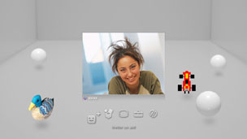

Amis > Chat vocal / vidéo > Démarrer ou quitter un chat vocal / vidéo
Démarrer ou quitter un chat vocal / vidéo
Pour utiliser cette fonctionnalité, vous devrez peut-être mettre à jour le logiciel système.
Vous pouvez utiliser le chat vocal / vidéo avec des personnes de votre Liste d'amis. Pour utiliser le chat vocal, vous avez besoin d'un périphérique d'entrée / sortie audio (comme un casque, vendu séparément). Pour utiliser le chat vidéo, vous avez aussi besoin d'une caméra USB (vendue séparément).
Démarrer un chat vocal / vidéo
1. |
Sélectionnez |
|---|---|
2. |
Sélectionnez |
3. |
Sélectionnez |
4. |
Tapez un message, puis sélectionnez [Envoyer].  Si la personne se joint au chat, son image est affichée et le chat vocal / vidéo démarre. |
 (Amis) >
(Amis) >  (Démarrer nouveau chat).
(Démarrer nouveau chat). (Chat vocal/vidéo).
(Chat vocal/vidéo). (Inviter un ami) dans le menu qui s'affiche à l'écran.
(Inviter un ami) dans le menu qui s'affiche à l'écran.Conseils
- Le système PS3™ prend en charge le chat vocal / vidéo. Il se peut que le logiciel du jeu propose des options de chat supplémentaires, telles que le chat pendant le jeu. Pour plus de détails, reportez-vous aux instructions qui accompagnent le logiciel utilisé.
- Pour discuter, vous devez être connecté à PSNSM.
- Même si vous pouvez inviter plusieurs Amis au chat, seuls les avatars des cinq premiers Amis sélectionnés à l'écran s'affichent dans le salon de chat.
- Un salon de chat peut accueillir jusqu'à six personnes.
- La fonction de chat vocal / vidéo n'est pas disponible si des restrictions relatives à son utilisation sont définies. Pour plus d'informations sur les paramètres de contrôle parental, consultez [À propos du menu XMB™] > [Utilisation des paramètres de contrôle parental] dans le présent mode d'emploi.
- Sur le système PS3™, vous pouvez utiliser un casque USB compatible / un casque Bluetooth® / une caméra USB EyeToy™ / PlayStation®Eye / une caméra USB compatible UVC (USB Video Class).
- Lorsque vous connectez une caméra USB à l'aide d'un concentrateur (hub) USB, choisissez un concentrateur qui prend en charge USB 2.0. Si vous utilisez un concentrateur qui ne prend pas en charge USB 2.0, l'image risque de s'altérer ou de ne pas s'afficher.
- Pour plus d'informations sur les périphériques pris en charge et sur leurs instructions d'utilisation, contactez le revendeur auprès duquel vous les avez achetés.
Quitter le salon de chat (quitter le chat vocal / vidéo)
Au cours d'un chat, sélectionnez  (Partir) dans le panneau de configuration.
(Partir) dans le panneau de configuration.
Conseil
Si la personne qui a lancé le chat vocal / vidéo quitte la session, le salon de chat se referme.